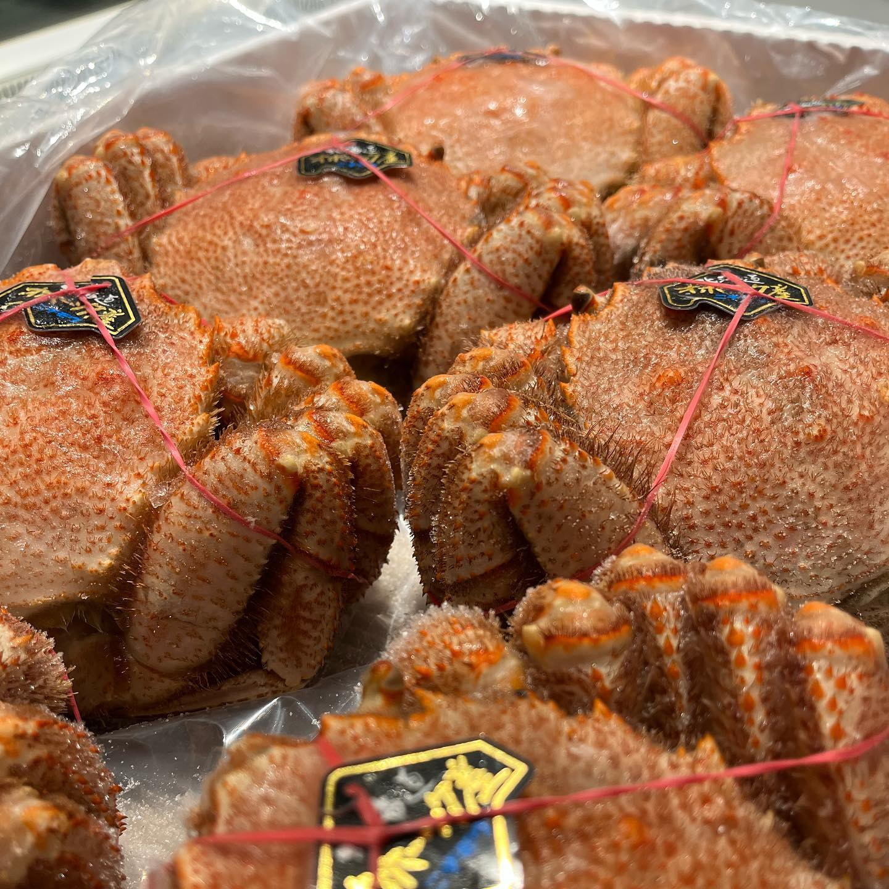

02
新鮮な魚と
新鮮な魚と
日々の風景
とびきり新鮮な魚介類と、お店の日常風景





旬の美味しい魚介類を厳選し、皆様の食卓にお届けしています。
毎日の食事が、新鮮で美味しい魚の味わいで満たされるよう、心を込めてお手伝いします。
2011年の創業以来、勝田商店は新鮮で美味しい魚介類を厳選し、地域の皆様に愛され続けてきました。
毎朝15kmの市場を歩いて目利きを活かして選んだ、とびきり新鮮な魚介類を取り揃えています。毎日の食卓がもっと豊かになるよう、旬の美味しい魚をお届けします。
とびきり新鮮な魚介類と、お店の日常風景
中野ブロードウェイ店
プロの料理人からご家庭の皆様まで、心よりお待ちしております
東京都中野区中野5-52-15
中野ブロードウェイ B1F
駅から徒歩5分、アクセス良好です
平日：朝 5:00 〜 夕方 6:00
土曜：朝 5:00 〜 午後 4:00
定休日：日曜・祝日
※ 早朝のご相談も承ります
TEL: 03-1234-5678
FAX: 03-1234-5679
EMAIL: kokoro@katsuta-shoten.jp
魚の選び方や調理法もお気軽にご相談ください